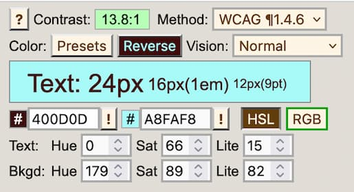
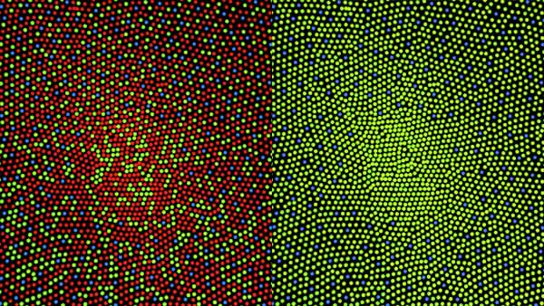
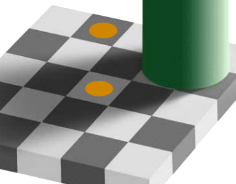

Web Accessibility: Understanding Colors and Luminance
While understanding color, luminance, and saturation is important for design and readability for all sighted users, they are essential for those with reduced vision and color-deficient vision and those with specific neurological, cognitive, and other impairments.
Accessibility guidelines define adequate color contrast for sighted users with reduced vision, as well as guidelines intended to help users with color insensitive vision, commonly referred to as "color blindness". Understanding color is also important in preventing seizures and other physical reactions in people with vestibular disorders or other neurological disorders.
Overview
The choice of colors and their use is a significant component of accessibility. On the surface, the subject seems simple. Still, it is a complex subject because color perception is as much about the physiology of the eye and human brain processing as it is about light emitting from a computer screen.
Environment and perception
Environment matters. Perception of color in a well-lit room will be different than perception of that same color on that same computer screen in a dark room. Regarding accessibility, using certain color combinations has more impact than others. Font size, font style (some fonts are so thin or fancy that they present accessibility problems on their own), background color, the size of the background space around the text, even pixel densities, and more all affect how color is delivered from the screen.
A viewer's distance from the screen, the ambient background, the health of his eyes, and more all affect how that color is received by the viewer. How the viewer perceives color after it gets to their eyes is yet another matter, and can be affected by overall health. Fortunately, there are media queries that enable developers to provide styles based on user preferences, including contrast and color scheme preferences.
When supported, the Ambient Light Sensor interface returns the current light level or illuminance of the ambient light around the hosting device, enabling a web page to be aware of any change in the light intensity, and consequently, adjust the text accordingly. Additionally, the above media queries enable developers to provide alternative user experiences when user preferences indicate preferred contrast levels, automatically adjusting levels depending on the user's location and what kind of screen they are using.
Luminance and perception
Color, contrast, and luminance are the most central and critical concepts to creating accessible web content with color. Luminance is of particular importance, however, because understanding what it is and how it is employed enables accessibility for those who are color-blind, as well as those who can perceive color. The luminance contrast enables the color blind to distinguish dark from light.
Luminance must be established before the contrast may be. When speaking of color contrast, W3C formulas are incorporating luminance, not just the colors ("hues") themselves.
Terminology
Terminology can be confusing because different terms often describe the same thing. "Luminance" and "Saturation" are particularly important to get right. For example, "saturation" is known as "chroma" in some circles. In others, "chroma" and "saturation" are two different concepts. The "L" in the HSL color space is sometimes referred to as "luminosity," and other times as "lightness." Even something seemingly simple, like naming common colors, can be open to debate. For example, the color "crimson red" may be described in hex values as #990000 by some and #DC143C by others. For this document, we'll use terminology as it is defined in the W3C, in the CSS Color Module Level 4
When working with color, it's important to know which "color space" you are working in, as different color spaces map to different measurement systems.
In color printing, your printer likely has cyan, magenta, yellow, and black (CMYK) ink cartridges. CMYK is a subtractive model wherein the four inks remove specific wavelengths of light, reflecting only the narrow range each is associated with. RGB is an additive color model that adds different proportions of red, green, and blue lights.
Currently, the RGB color space predominates as the space web developers work in. While HEX, RGB, and HSL color spaces are notated differently, browsers automatically convert values between these color notations. CSS color modules provide additional color spaces. Still, because of the current domination of the RGB color space in measuring color output, most calculations in this document are presumed to be in the RGB color space and, very specifically, in the sRGB color space.
The sRGB color space
Color has many ways of being defined, as is apparent in the <color> data type, including RGB, RGB decimal, RGB percent, HSL, HWB, LCH, and CMYK, among others.
For digital concerns, much of the technology has historically resided in the RGB color space. The RGB color model is extended to include "alpha" — RGBA — to allow specification of the opacity of a color. Other methods for measuring color involve measurements using other color spaces and are supported in modern displays and browsers. Still, color measurements in the RGB color space predominate, including in video production.
Technologies, such as OpenGL and Direct3D incorporate support for the sRGB gamma curve, although some articles for OpenGL reference use of RGBA rather than sRGB. WebGL is usually in the RGBA format; see an example of how it is used in "Clearing with colors".
CSS color values
It's important to know that there are variations even within one color space, such as the RGB color space. For example, variations of the RGB color space include RGB, sRGB, Adobe RGB, Adobe Wide Gamut RGB, and RGBA, among others.
These are examples of the CSS notations used to define a color. Here the example color for each is a fully opaque magenta:
/* named color */
color: magenta;
/* sRGB value with percentage values */
color: rgb(100% 0% 100%);
color: rgb(100% 0% 100% / 100%);
/* by sRGB numeric values */
color: rgb(255 0 255);
color: rgb(255 0 255 / 1);
/* legacy rgba notation */
color: rgba(100%, 0%, 100%, 100%);
color: rgba(255, 0, 255, 1);
/* by sRGB value in hex */
color: #f0f; /* #rgb, a shorthand for #rrggbb */
color: #ff00ff; /* #rrggbb */
color: #f0ff; /* #rgba */
color: #ff00ffff; /* #rrggbbaa */
/* by HSL representation of the sRGB value */
color: hsl(300 100% 50%);
color: hsl(300deg 100% 50% / 1);
/* by HWB representation of the sRGB value */
color: hwb(300deg 0% 0%);
color: hwb(300 0% 0% / 1);
The first example uses one of the defined named colors.
We can set the sRGB values directly as a percentage, with 0% being off (black) and 100% being the full value for that color. The values are in the order of red, green, and blue. We can also set the sRGB values directly by a number from 0 to 255.
Shown after that are hex color values. Hexadecimal is a numbering system with base-16, where the 0-255 integer is represented by two digits ranging from 0-15 using the digits 0-9 and a-f for 10-15. Thus, ff = 255, 00 = 0, and d5 = 200. The '#' symbol precedes the color to indicate the value is hex.
If all values are pairs of identical digits, the value can be represented by single digits that the browser will duplicate. Thus f00 is the same as ff0000. If a fourth set of numbers is present, that value is the A in RGBA, the alpha channel defining transparency in terms of the opacity value of the color. A higher value means the color is more opaque and therefore, less transparent. In the examples above, the alpha value is f, ff, 1, and 100% for fully opaque.
The examples also show the legacy rgba() syntax. The older syntax for color functions was comma-separated, with separate functions for when the alpha channel was included. New color functions only have one syntax with space-separated (rather than comma-separated) values, with the alpha channel, if present, being preceded by a slash.
The following examples show "HSL", which stands for Hue, Saturation, and Lightness. HSL color values are considered by many to be more intuitive than RGB values. The color produced from the settings are still in the sRGB colorspace, but hsl() is an intuitive syntax for many. The hue is adjusted as an angle, and it is easy to create a user interface using a knob or circular control to adjust the hue. Do note that HSL colors incorporate lightness, not luminance, which is a significant consideration.
The last examples shows "HWB" which stands for Hue, Whiteness, and Blackness. Unlike rgba() and hsla(), hwb() does not have a legacy a syntax and does not support comma-separated values. With both hsl() and hwb() the first value can be a <number> or an <angle> value. When unitless, the value is interpreted as deg degrees.
Conversions
As we saw, one color within the same color space may be expressed in many ways. Looking at how the RGB color space is used to describe the color "magenta", you can see that the same color may be expressed in a shorthand, three-digit hex number that converts to an rgb value as a six-digit hex number that also converts to the same rgb value, or as a rgba value, expressed in percentages.
RGB is hardware-oriented, reflecting the use of CRTs. Many developers and designers prefer the intuitiveness of hsl() notation. Converting from RGB to HSL is not a simple equation. Fortunately, browsers do it automatically, and shift-clicking on colors in browser developer tools provides conversion functionality.
In addition to developer tools, many tools can convert RGB to HSL for you and provide both the RGB hexadecimal and CSS function syntax. A great example of a tool that converts colors for you is Tom Jewett's "mini color selector" with HSL, RGB, and Hex options for checking contrast in the browser. Note that developer tools color pickers and this tool all provide WCAG color contrast values.

As noted earlier, the CSS color module includes adding additional colorspaces, including lch() functional color notation and the lab() color coordinate system which can specify any visible color, but because of its ubiquity, sRGB is the default and preferred colorspace for accessibility.
Where accessibility is concerned, however, standards and guidelines are currently written predominantly using the sRGB color space, especially as it applies to color contrast ratios.
Note: Almost all systems used today to view Web content assume sRGB encoding. Unless it is known that another color space will be used to process and display the content, authors should evaluate using sRGB colorspace. If using other color spaces, apply the principles of minimum contrast ratios.
CSS Color Module Level 5 introduced lch() functional color notation and the lab() color coordinate system which can specify any visible color. These will change the domination of the sRGB color space in the future, but we are not there yet.
Querying color values
The Window.getComputedStyle() method returns values using the RGB Decimal Reference scale. For example, calling Window.getComputedStyle() on a div with a background-color: #990000; set returns the computed background color as rgb(153 0 0) — the RGB Decimal reference. Being tied to computer hardware,Window.getComputedStyle() measures color in terms of RGB, not how the human eye perceives color.
Red / green color blindness
Protanopia is a color vision deficiency in which the eye has no red cones; sRGB can still be perceived via green cones, though darker than normal vision. Both protan (red deficient) and deutan (green deficient) deficiencies cause difficulty distinguishing between red and green.
Luminance and Contrast
Contrast
The contrast between colors ("hues") is a critical component, but the use of color ("hues") alone is not enough to create accessible content. As mentioned before, any calculation of contrast must include luminance.
In addition, the "shape" of the text itself will matter. Thin letters will be harder to read than thick ones; all typefaces need space to "breathe" for human perception.
Contrast and font size
WCAG contrast guidelines define "large" text as text that is 18pt (approximately 24px) or larger when font-weight is normal and 14pt (approximately 18.7px) for bold text. Stating:
Text that is larger and has wider character strokes is easier to read at lower contrast. Therefore, the contrast requirement for larger text is lower. This allows authors to use a wider range of color choices for large text, which is helpful for the design of pages, particularly titles.
While larger text does not require as great color contrast with its background as smaller text, increasing font size is not a panacea.
"Normal" print is usually considered 11.5pt to 12pt, equivalent to 16px on screen. While smaller font may be legible — a user can make out letters at ~70% accuracy — that is not readable. A 16px font size is generally readable for people with normal vision. Someone with 20/40 needs twice that, about a 31px font. This is why the WCAG guidelines require that users have the ability to zoom any text larger.
While a text displayed too small is hard to read, so is a text that is too large. For users with 20/20 vision, with a text size greater than approximately 96px, reading speed decreases. Also, when there is a large disparity between the smallest and largest font size on a page, the larger text will become less readable if users enlarge the smaller text on the page, as most browsers zoom all text as the user zooms.
In general, for accessibility purposes, the more contrast, the better. That changes with animation. "Safer" animation means images with less contrast, not more. For more on color contrast in animation, see Three Flashes or Below Threshold Understanding SC 2.3.1
Also, note that icons need sufficient contrast for perception. See WCAG 2.1 technique G207
Luminance
It is the difference in the luminance of a color that enables us to see the contrast. Relative luminance is defined in WCAG as "the relative brightness of any point in a colorspace, normalized to 0 for darkest black and 1 for lightest white."
This statement is of course accurate, but may be confusing when used in reference to the RGB color space, which is an integer between 0 and 255. White has 100% relative luminance, black has 0% relative luminance (in most but not all literature). Interpreting for the W3C standard above, that would mean that white, normalized to 1, would have an RGB value of rgb(255 255 255) and black, normalized to 0, would have an RGB value of rgb(0 0 0). Note that black and white can also be written as rgb(100% 100% 100%) and rgb(0% 0% 0%) respectively, which may be more intuitive.
So, where do these numbers of 0 to 255 come from? Historically, graphics engines stored the color channels as a single byte, which means a range of integers between 0 and 255.
The luminances of the primary colors are different. Yellow has a greater luminance than blue, for example. This was done by way of design, to achieve white alignment of the monitor, according to the NASA document, "Luminance Contrast in Color Graphics"
A color contrast ratio is meaningless without its luminance component, and once luminance is established, the color contrast ratio can be established.
Where human perception is concerned, a difference in luminance matters more than a color difference. This is important, as luminance contrast enables the development of content that even those with color blindness can see. With this understanding, luminance may be manipulated so that colors that are difficult to see because of their low luminance could be made more legible by placing these colors against another with contrasting luminance. An interesting study by NASA on the color blue, for example, noted that this color, which has low luminance, can be made legible if care was taken to achieve adequate luminance contrast (From the article, Designing with blue)
Calculations for relative luminance are not casual ones. Luckily, there are online luminance and contrast checkers available, and even instructions on how to build your own contrast checker.
Perceiving color
Color is our perception of the narrow band of visible light, from red through yellow and green to blue. Our sensitivity to these various hues of color are not equal. The light sensitive cells in our eyes, called cones, are tuned to perceive some colors more than others. About 65% of cones are most sensitive to a yellow/green, but also respond to red (we'll call these "red" cones). 30% are green sensitive, and only 5% are blue sensitive. While there are far fewer blue-sensitive cones than the other two types, these cones are very sensitive, which partially makes up for their smaller numbers.
Deep, pure blue is perceived differently than other colors as blue cones do not contribute to luminance and we have far fewer blue cones than red or green.

On the left is the central cone mosaic of standard vision, and on the right is that of someone with protanopia, a form of color vision deficiency, where they are missing the red cones. (Illustration by Mark Fairchild of RIT, Wikimedia Commons)
The red and the green cones join together to create luminance, which we can think of as lightness/darkness without regard to hue. Separately, the red, green, and blue cones allow for standard vision to perceive millions of colors. For accessibility, it's important to know that our brain processes luminance separately from color (hue and colorfulness).
Luminance provides for fine vision details, including differentiating edges and text. Hue and colorfulness carry a third of the detail of luminance. Image data compression takes advantage of this fact. As an example, h.264 video codec samples color at a fourth of the resolution of the luminance.
For accessibility, this means that luminance contrast is critically important for text. Color, as in hue and colorfulness, is important for distinguishing items such as different lines on a map or bars in a graph.
Another essential point to consider is the color or luminance that is surrounding a color. Colors appear differently depending on what is surrounding them. In the following image, both the yellow dots and the grey squares they are are the same sRGB color. Context-sensitive color perception makes them appear different; your brain's image processing adjusts the perception based on what it thinks is in shadow or not.

The yellow dots in this image are identical colors on your monitor, but they appear different due to context. (Image D.Lyon)
Our contrast, lightness, and color perception are affected by the context of the nearby colors and other features of a design or image. This makes predicting contrast challenging. It is not as simple as a mathematical ratio between two colors.
To summarize, color is as much about human physiology and perception in the brain as it is about measuring light from a computer screen. It's also important to understand that the ambient light environment affects the ability to perceive color and contrast. Light and its measurements are linear, but human vision and perception are not.
Adaptation
Our eyes don't adapt equally, in the same way, going from light areas to dark ones and vice versa. This is due to the physiological ways our eyes are built. This affects the ability of a user to read text against a background. At least two kinds of adaptation take place: local adaptation and adaptation to an ambient environment.
Local adaptation occurs right on the "page" a reader is looking at. For example, if you have blue text within a gray "highlighted" area, your eyes will perceive that exact blue text with a gray highlight differently if it is in a black <div>, or a white one. This is called local adaptation. This difference in the ability to perceive the text is affected even though the room's ambient lighting does not change.
The implication is that web developers who seek to improve the legibility of text against a background can take advantage of the principles of local adaptation.
Dark adaptation to low luminance is slow. When you come in from outside, where the sun is bright, and walk into a dark room, you are experiencing dark adaptation. It can take a few minutes to adjust to this.
Light adaptation is the reverse. Going from a dark room into bright sunlight is quicker but can also hurt.
The implication is that web developers who seek to improve the legibility of text in which the ambient conditions of a room have changed can take advantage of the AmbientLightSensor interface and the prefers-contrast media query.
Saturation
Saturation deserves a special mention in discussions about color ("hues") and accessibility. Generally speaking, most focus is on luminance when attempting to ensure enough contrast between text and its background or evaluating the possibility of inducing seizures in those sensitive to photosensitive seizures. One aspect of color ("hues"), independent of luminance, deserves special attention as it applies to accessibility: the concept of saturation. This is due to its ability to cause seizures in those susceptible to photosensitive seizures, regardless of color's luminance. As discussed in the particular case of red, the Epilepsy Foundation noted that, irrespective of luminance, a transition to or from a saturated red is also considered a risk.
Saturation is sometimes described as the "purity" or "intensity" of a color. Although these are good definitions for "pigments" in an artist's paint set, they are not as accurate as color definitions from a computer screen.
When it comes to color on a monitor, saturated colors are of a particular wavelength. While the definition of saturation for each color space may differ, saturation is readily measured. The key is to know which color space you are working in and be ready to convert it if necessary.
The color spaces most frequently considered when discussing photosensitivity are the RGB, HSL, and HSV, also known as HSB, color spaces. The HSV color space, which stands for hue, saturation, and value, and the synonym HSB, which stands for hue, saturation, and brightness), are represented in CSS as hwb() for hue, whiteness, and blackness.
It's important to know what color space you're working with. For example, saturated colors have a lightness of 0.5 in HSL, while in HWB, they have a value 1. Saturation in the RGB color space is usually indicated by an RGB value of 255 or 100% for the color in question. For example, a saturated red of hex value #ff0000 has an RGB value of rgb(255 0 0) and an HSL value of hsl(0 100% 50%). A different saturated red with a hex value of #ff3300 has an RGB value of rgb(255 51 0) and an HSL value of hsl(12 100% 50%). Both are "saturated" reds. They are two different "hues" but are both considered to be a saturated color.
Saturation is not brightness. Brightness refers to how much white or black is mixed in with a color. One can decrease saturation by adding white, black, or gray to the color; to take the example further, brightness can be increased by adding white, reducing saturation. A typical example is to add white to red to get the color pink. Pink is considered a desaturated red.
Saturation and luminance
There is a loss of saturation at the extremes of luminance and the extremes of black and white. In NASA's effect of luminance on saturation, they point out that there is a loss of saturation at low luminances. and also, "…the loss of saturation at high luminances–the colors converge on white."
Color combinations
Contrast alone is not enough when it comes to accessibility considerations. In the case of animation, certain color combinations are more likely to cause photosensitive seizures to those who are susceptible to them than others. For example, alternating flashes between red and blue is more problematic than alternating flashes between green and blue. It has been theorized that this is because the "red" sensitive cones of our eyes, which tend to cluster around the fovea (near the center), are physically located at a different location than the "blue" sensitive cones of our eyes, which are located away from the fovea and towards the rims. The electrical signals from the eye to the brain have much to resolve between them as the information is processed in our brains.
Some colors more likely to cause epileptic seizures. Complexities underlying brain dynamics can be modulated by some color combinations more than the others. For example, red-blue flickering stimulus causes larger cortical excitation than red-green or blue-green stimulus.
Certain color combinations can be very problematic on a computer monitor or mobile device, and some color combinations can interfere with some impairments. The combination of red/blue is one such example.
- Never rely on hue alone for differentiating details. Adequate luminance contrast is required.
- The green in a monitor makes up the vast majority of luminance (light), so it will usually be a significant part of the lighter colors.
Working with blue
Some people cannot differentiate between all colors. Some colors, such as pure blue, are low in luminance. Colors that are low in luminance should be the darker of contrasting colors. Blue is also very low in resolution. There are far fewer blue cones, and they are scattered in our peripheral vision and not present in our central vision. The human eye sees blue at a lower resolution than green and red.
This leads to some blue color use guidelines:
- Pure blues should typically be the darkest of two colors.
- When using blue as the lighter of the two colors, add green to increase contrast and improve readability.
The nature of blue light causes it to focus at a different location on the retina than red, so a pure red and a pure blue color that are immediately adjacent and touching may "shimmer" when next to each other.
The special case of red
Not all colors ("hue") are processed similarly by our brains. Human physiology and psychology are affected by the color red, generally speaking, in ways different from that of other colors. We respond physiologically as well as psychologically to colors. For example, it has been demonstrated that some colors are more likely to cause epileptic fits than others. Some devices offer a "grayscale" setting as an accessibility option" which can help people who are photo-sensitive. To mimic the grayscale setting, use the CSS filter property with a grayscale() or saturate() <filter-function>.
Saturated red
"Saturated Red" is a special, dangerous case, and there are special tests for it.
The concept of color saturation is a difficult one to understand when only looking at numbers and terminology, so consider looking at the image below to illustrate the concept of saturation in a color:
The same "color" proceeds from least saturated on the left-hand side to most saturated on the right-hand side.
More than one "red" color may be considered a "saturated" red. For example, the color #990000 at hsl(0 100% 30%) is fully saturated but is less bright than the colors described above. Similarly, the color #8b0000 also has a saturation of 100%.
Not all saturated reds may be represented well in the RGB spectrum or other spectrums commonly used in web development. According to Wikipedia's page on "Shades of Red", the color "Carmine" is a saturated red which, in its pigment form, mostly contains red light with wavelengths longer than 600nm; the article makes the special note that "Carmine" is close to the extreme spectrum. This places it far beyond standard gamuts (RGB and CMYK), and its given RGB value is a poor approximation only."
Saturated red flashing
In addition to a red environment affecting the cognitive function of those with traumatic brain injury, color in the red spectrum wavelength requires special attention and tests.
Gregg Vanderheiden, when testing the Photosensitive epilepsy analysis tool, noted seizure rates were much higher than expected. They found that we are much more sensitive to saturated red flashing. (See the video, The Photosensitive epilepsy analysis tool.)
Flashing and seizures
Continuous flashing brighter/darker at rates higher than three flashes per second has been shown to induce photic seizures in some people. It has also been found that specific, very regular, high-contrast patterns, such as parallel white and black stripes, can also induce seizures.
The Epilepsy Foundation of America researched photic- and pattern-induced seizures. The study resulted in several fundamental guidelines:
- Single, double, or triple flashes in one second are acceptable, but a sequence of flashes is not recommended when more than three flashes happen within one second.
- When displaying light and dark stripes, the pattern should display no more than five light–dark pairs of stripes, if the stripes change direction, oscillate, flash, or reverse in contrast or eight light–dark pairs of stripes, if the pattern is unchanging or continuously and smoothly drifting in one direction.
The consensus recommendations are in this brief paper, Photic- and Pattern-induced Seizures: Expert Consensus of the Epilepsy Foundation of America. Some additional insights are available in this UK paper covering guidelines for preventing seizures..
Psychophysical aspects of color
Color as in hues and saturation can affect our mood, and enhance — or de-enhance — our interactive experiences.
Examples of color's effect beyond vision
- Color can be culturally dependent: A Cross-Cultural Study of the Affective Meanings of Color
- Color affects our emotions: Color and emotion: effects of hue, saturation, and brightness
- Higher contrasts can also have a positive affect on our emotions: Emotion Variation from Controlling Contrast of Visual Contents through EEG-Based Deep Emotion Recognition
- Some colors can affect our perception of time: Color and time perception: Evidence for temporal overestimation of blue stimuli
- Blue also has a significant effect on brightness and glare: Blue and glare & brightness
- Red tinted glasses can provide increased happiness or joy: Looking Through "Rose-Tinted" Glasses: The Influence of Tint on Visual Affective Processing
- Red is well known to have significant effects on our behavior: How the Color Red Influences Our Behavior, Scientific American, S. Martinez-Conde, Stephen L. Macknik
- Red Environment: Studies have shown that for those who suffer Traumatic Brain Injury, cognitive function is reduced in a red environment.
See also
- Accessibility
- Accessibility learning path
- CSS
colorproperty <color>data type- Web accessibility for seizures and physical reactions
- How the Color Red Influences Our Behavior Scientific American By Susana Martinez-Conde, Stephen L. Macknik on November 1, 2014
- Red Desaturation The human eye is so sensitively "tuned" to red, that ophthalmologists set up a test using it, assessing the integrity of the optic nerve.
- Photic- and pattern-induced seizures: expert consensus of the Epilepsy Foundation of America Working Group